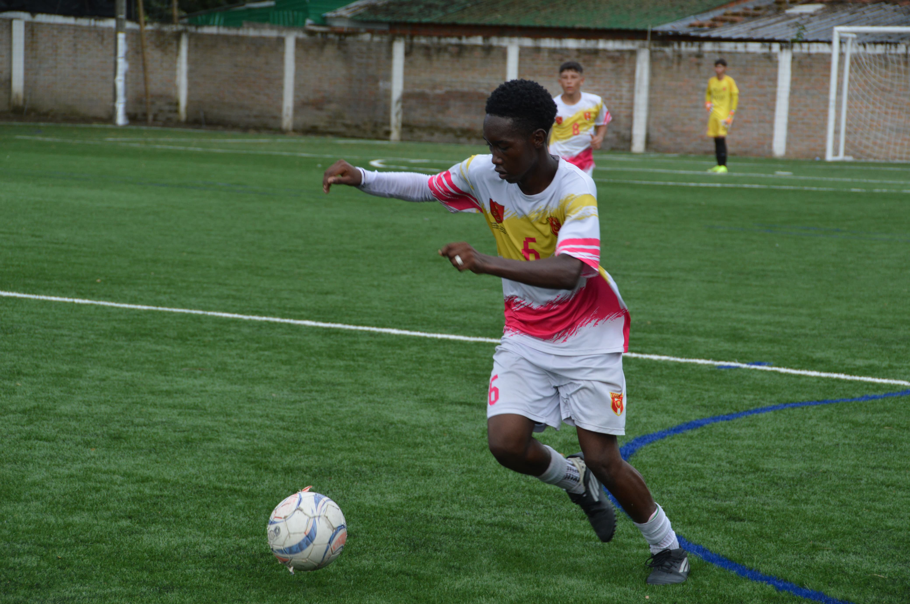

Sobre Nosotros

Germán Castaño
Rector
Oneida Pérez
Coordinadora y fundadora
Marta
Secretaria
Desarrollador
Jhon Eddier Olea
Creador y desarrollador de la página
🦸♂️ Misión
Somos una institución educativa, comprometida con el desarrollo cognitivo y socioafectivo de niños y adolescentes, teniendo como base el desarrollo de sus competencias comunicativas en procura de un pensamiento crítico e innovador; bajo criterios de excelencia académica y el manejo ético de las TIC, trascendiendo como agentes de positiva influencia y gestores de felicidad.
👁️ Visión
Al 2025, la institución educativa Gabo, será líder regional en la formación de ciudadanos con pensamiento crítico, competentes en el ámbito socioemocional, capaz de innovar e interactuar con el mundo; a partir del análisis del contexto histórico, socio-cultural y del manejo de las TIC protagonista de una transformación social, orientada hacia la convivencia pacífica, en el marco de una relación armónica.
✏️ Actividades
- 1 - Ene
- 2 - Feb
- 3 - Mar
📹 Video
Preguntas frecuentes
Aquí van las preguntas y respuestas comunes.